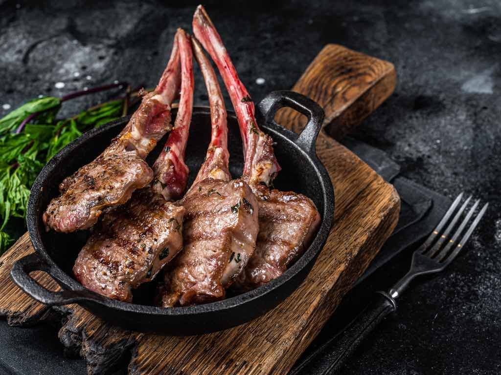

Mutton Chops
Home

Description
Mutton chops are a classic dish made from the meat of sheep.
They are typically grilled or roasted and can be seasoned with various spices and herbs to enhance their flavor.
Ingredients
- 4 mutton chops
- 2 tablespoons olive oil
- 2 cloves garlic, minced
- 1 teaspoon rosemary, chopped
- Salt and pepper to taste
- 1 lemon, juiced
Steps
- Preheat the grill or oven to medium-high heat.
- In a bowl, mix olive oil, minced garlic, rosemary, salt, pepper, and lemon juice.
- Rub the mixture over the mutton chops evenly.
- Place the chops on the grill or in a roasting pan.
- Cook for about 6-8 minutes on each side, or until they reach your desired level of doneness.
- Remove from heat and let them rest for a few minutes before serving.
- Serve hot with your choice of sides.